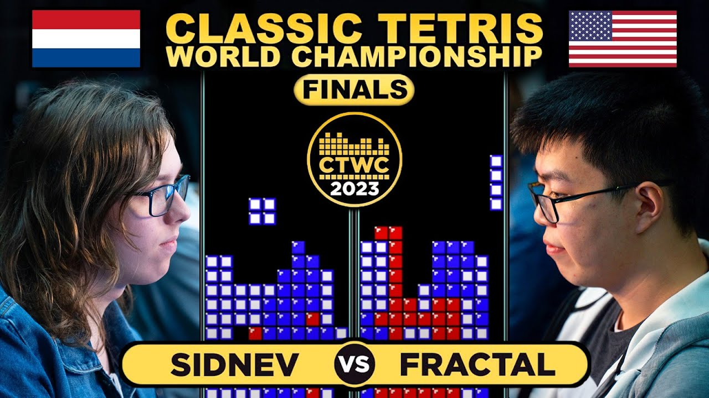
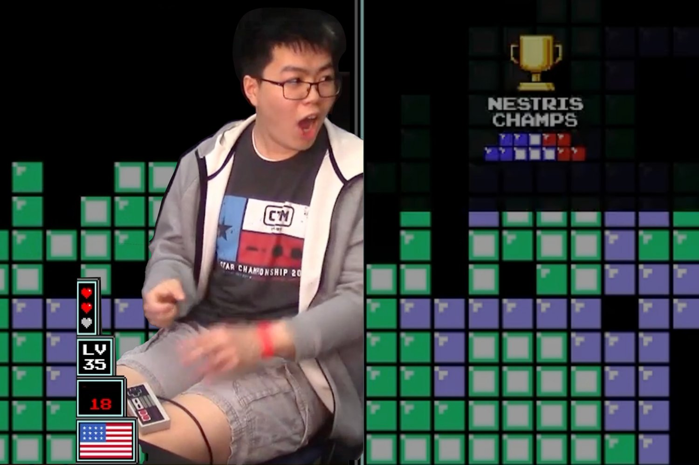
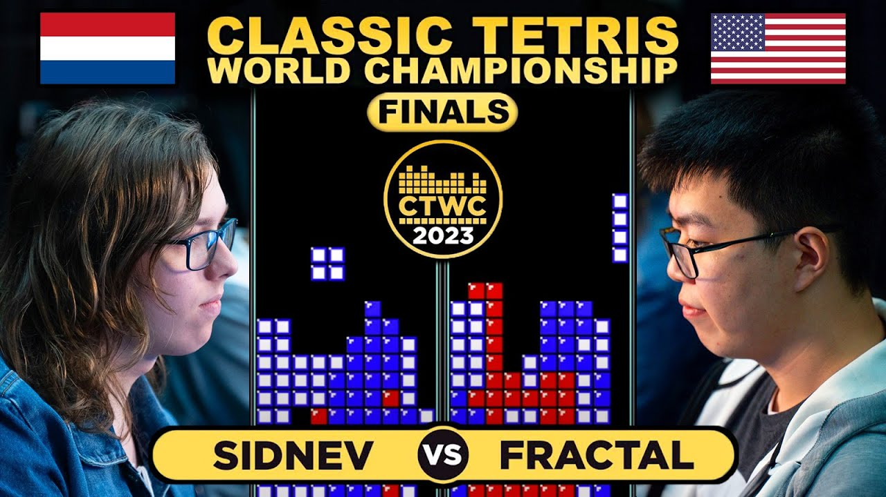
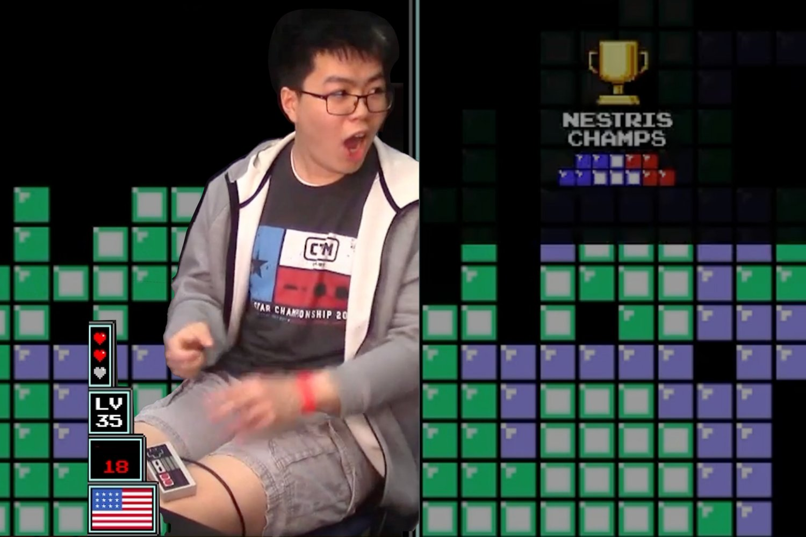

Toernooien en wereldkampioenschappen
Kort overzicht
Competitief Tetris bestaat uit verschillende formats: sprint (wie maakt 40 lijnen het snelst), marathon (hoge score binnen een tijd of level), en versus‑gevechten waarbij spelers elkaar "garbage" sturen. Populaire platforms zijn de klassieke NES-versie en moderne online varianten zoals Tetris 99.
Wereldkampioenschappen
Het Classic Tetris World Championship (CTWC) is een bekend voorbeeld van een internationaal toernooi. Dergelijke kampioenschappen gebruiken vaak vaste formats (bijv. single/double elimination, BO3/BO5) zodat vaardigheid en consistentie doorslaggevend zijn.
Regels en vaardigheden
Belangrijke factoren zijn snelheid, positionering en technieken zoals T-spins en combos. Sommige toernooien stellen vaste startlevels of seeds in om eerlijkheid te waarborgen en variatie te beperken.
Deelnemen en volgen
Toernooien hebben vaak kwalificaties, online ladders of uitnodigingen voor topspelers. Wedstrijden worden veelal via Twitch of YouTube gestreamd met commentaar en analyses.
Waarom het boeiend is
Competitief Tetris combineert snelheid met strategie: kleine beslissingen kunnen een match bepalen, wat het spannend maakt voor spelers en kijkers.